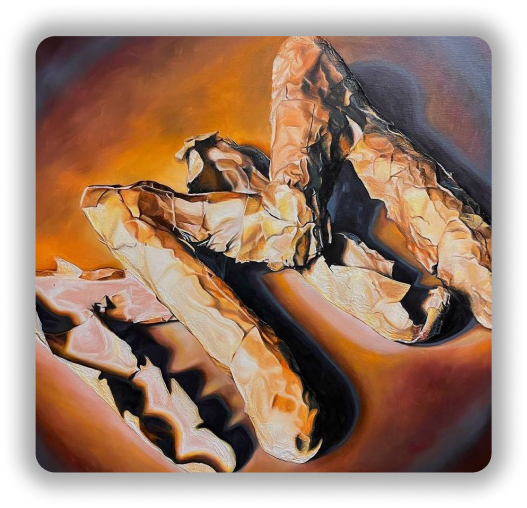
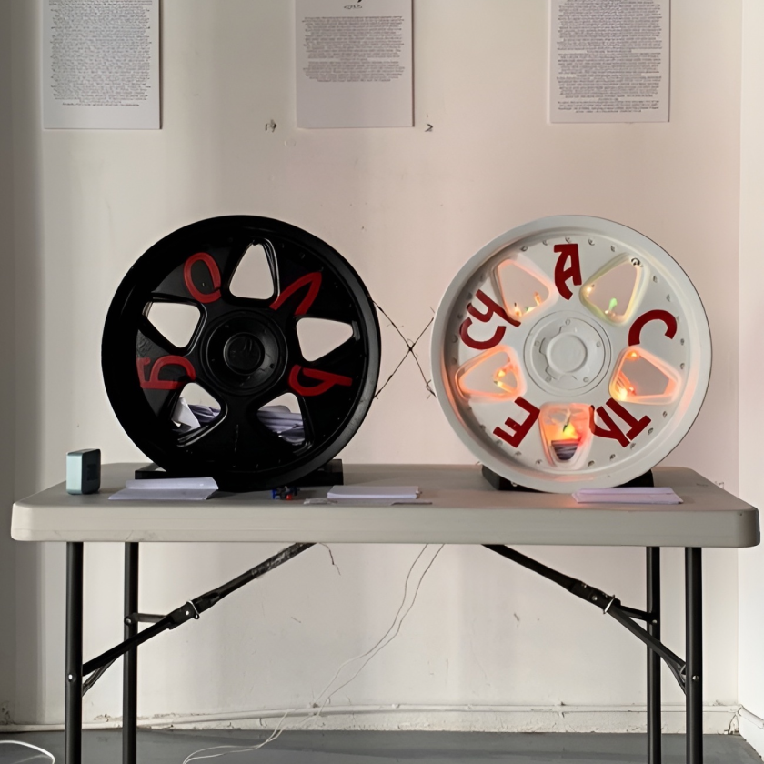
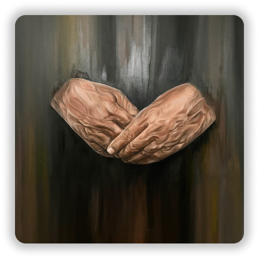
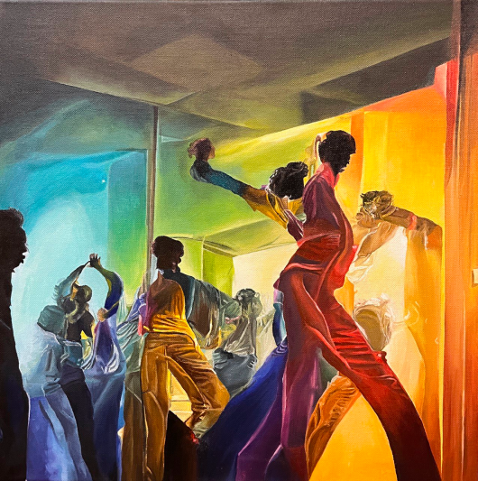

M
ilissa
L
evi

P
AINTING M
In the process of creating the sculptures and subsequently the painting, I explored sculptural and painting techniques, applying them to convey form and volume, as well as experimenting with linguistic aspects, which allowed me to create two different visual representations of the same letter, in different languages and cultures.

C
YCLE
If you have ever experienced true joy, enjoyed the elusive happiness of the moment, surely you are familiar with the opposite feelings, such as sharp pain, sadness, and lingering emptiness. Many people shy away from strong feelings and events that make us happy because they can become our source of pain.

P
ASSING OF TIME
The concept of movement and time is intriguing, particularly in daily routines. It seemed like a constant race against time. The human body reacts differently to waiting, loss of time, and uncomfortable actions and situations. Hands can reflect time through age, experience, and fatigue.
N
IGHT
A painting-sculpture created from trash and construction materials — foam, tile glue, putty and paint cans. It symbolizes the city at night, watched over by the eye.

H
APINESS OR SADNESS